비즈니스 계정부터 바르게
광고를 처음 시작할 때 가장 먼저 할 일은 광고 화면이 아니라 계정 정리예요. 데이비는 business.facebook.com에서 출발하라고 해요. 계정 상태에 따라 Business Suite, Business Settings, Ads Manager 등 다른 화면이 뜨지만 모두 같은 곳이니 화면이 조금 달라도 걱정하지 않아도 돼요. 페이지의 '홍보하기' 버튼이나 Ads Manager만 쓰는 것보다 Business Manager를 거쳐야 훨씬 많은 걸 직접 통제할 수 있어요.
실명 계정으로, 사업 전체를 담는 그릇부터
로그인은 반드시 본인 실명 페이스북 계정으로 해요. 가짜 프로필이나 이름이 틀린 오래된 계정은 쓰지 말라고 강조해요. 나중에 Meta가 신원 확인을 요구할 때 정보가 맞아야 하거든요.
그다음 '비즈니스 포트폴리오 만들기'를 눌러요. 페이지, 인스타그램, 광고 계정을 한데 담는 그릇이에요. 이메일은 실제로 자주 확인하는 주소를 넣어요. 경고, 결제 문제, 인증 요청이 모두 이 메일로 오고, 늦게 대응하면 광고 계정이 정지될 수 있어요. 사업 이름도 'test' 같은 이름 말고 실제 브랜드 이름과 맞춰요.
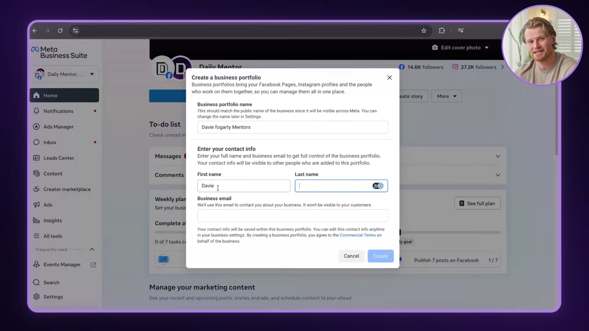
자산을 연결하는 순서
포트폴리오가 생기면 자산을 차례로 붙여요.
| 순서 | 할 일 | 왜 중요한가요 |
|---|---|---|
| 1. 페이스북 페이지 | 기존 브랜드 페이지를 추가하거나 새로 만들어요 | 광고는 이 페이지 이름과 프로필 사진으로 나가요. 빈 페이지처럼 보이지 않게 프로필과 커버 이미지를 채워요 |
| 2. 인스타그램 계정 | 로그인해서 같은 포트폴리오에 연결해요 | 없어도 진행은 돼요. 하지만 광고가 인스타그램에 많이 나가고, 일찍 연결하면 팔로워도 모여요 |
| 3. 광고 계정 | 'Oodie US'처럼 알아보기 쉬운 이름을 붙여요 | 시간대와 통화는 나중에 바꾸기 어렵거나 불가능해요 |
| 4. 결제 수단 | 사업용으로 써도 되는 카드를 등록해요 | 결제 실패를 반복해서 제출하면 계정이 정지될 수 있어요 |
| 5. 사용자 | 팀원, 대행사를 초대하고 필요한 자산에만 배정해요 | 결과만 보면 되는 사람에게 관리자 권한은 필요 없어요 |
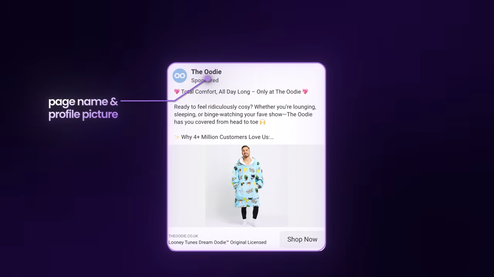
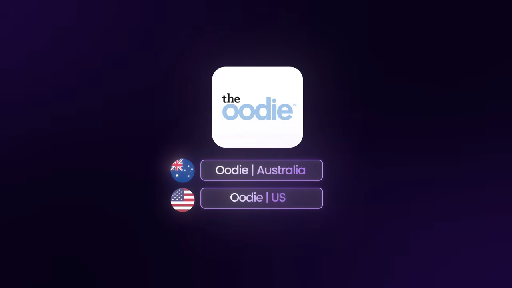
마지막으로 관리자 권한이 있는 사람은 모두 2단계 인증을 켜요. 누가 계정을 손에 넣으면 순식간에 돈을 써 버리고, 그게 계정 정지로 이어지면 사업하는 내내 골치가 아파요. 이미 포트폴리오가 있는 사람도 계정 선택기에서 올바른 사업을 골랐는지, 위 자산이 다 연결됐는지 한 번 점검하라고 해요.
돈 쓰기 전에 추적부터 확인
광고 계정을 만들었으면 Ads Manager로 넘어가기 전에 추적부터 확인해요. 메뉴에서 Events Manager를 열면 Meta가 내 웹사이트에서 일어나는 일을 볼 수 있는지 확인할 수 있어요.
예전 강의에서는 이걸 '페이스북 픽셀'이라고 불렀어요. 지금 화면에는 데이터 세트, 데이터 소스, 웹 이벤트 같은 이름으로 나와요. 이름은 신경 쓰지 않아도 돼요. 중요한 건 광고를 눌러 들어온 사람이 상품을 보고, 장바구니에 담고, 결제를 시작하고, 구매하는 걸 Meta가 볼 수 있느냐예요.
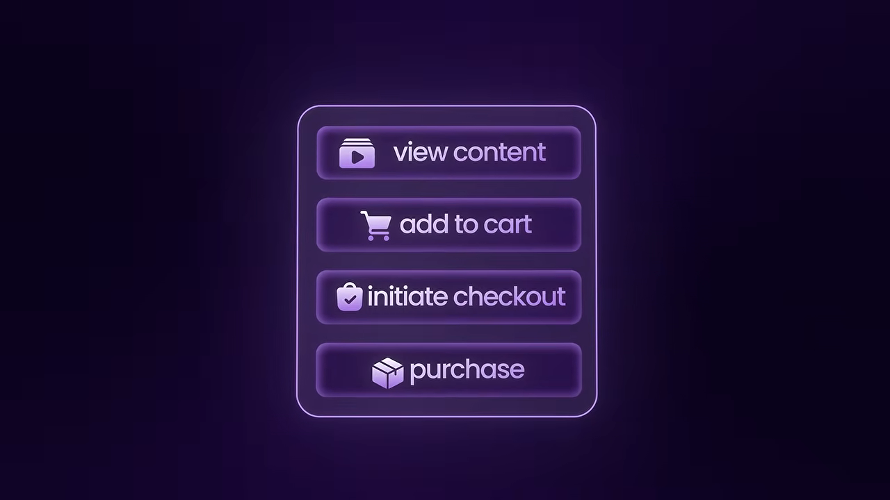
Shopify라면 채널 하나로 연결해요
아무것도 없으면 '데이터 소스 연결'에서 웹을 고르고 데이터 세트를 새로 만들어요. Shopify 스토어라면 코드를 직접 붙이지 않아도 돼요. Shopify 안의 페이스북·인스타그램 채널에서 Meta에 로그인한 뒤, 앞서 만든 비즈니스, 페이지, 인스타그램, 광고 계정, 데이터 세트를 고르면 돼요. 핵심은 Shopify가 지금 쓰는 그 비즈니스와 광고 계정에 연결돼 있어야 한다는 거예요.
직접 눌러 보고 기록되는지 확인
연결 후에는 Events Manager로 돌아와 이벤트가 들어오는지 봐요. 몇 분 걸릴 수 있어요. 아무것도 없으면 '이벤트 테스트' 도구에 사이트 주소를 넣고, 사이트에서 상품을 보고 장바구니에 담은 뒤 기록됐는지 확인해요. 무료 크롬 확장 프로그램인 Meta Pixel Helper로도 어느 페이지에서 픽셀이 작동하는지 볼 수 있어요.
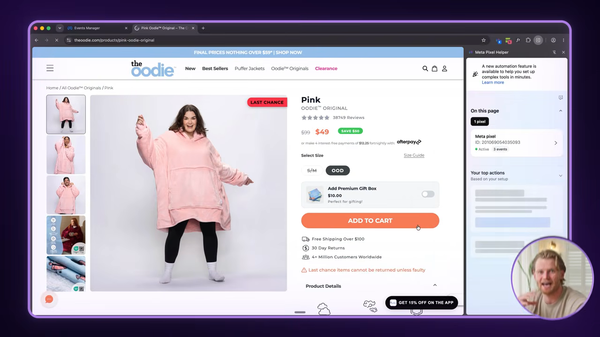
지루한 단계지만 이유는 분명해요. 사흘 동안 광고비를 쓰고 나서야 구매가 한 건도 기록되지 않았다는 걸 알게 되는 일을 막으려는 거예요.
캠페인: 목표는 판매, 예산은 캠페인 단위
Ads Manager는 캠페인, 광고 세트, 광고 세 단계로 이뤄져요. 데이비는 이 구조만 알면 플랫폼이 훨씬 덜 무섭다고 해요. 캠페인 탭에서 '만들기'를 누르면 먼저 캠페인 목표를 고르게 돼요.
목표는 거의 언제나 '판매'
캠페인 목표는 Meta에게 '무엇을 얻고 싶은지' 알려 주는 설정이라 전체에서 가장 중요한 결정이에요. 초보자는 안전해 보이는 트래픽, 싸 보이는 참여, 많이 보여 주고 싶은 동영상 조회를 고르다가 문제를 겪어요. The Oodie 같은 쇼핑몰은 물론 대부분의 사업은 '판매'를 고르라고 해요. 잠재 고객을 모으는 사업도 싼 리드를 많이 모으기보다 실제 매출과 연결해 보는 쪽이 낫다는 입장이에요.
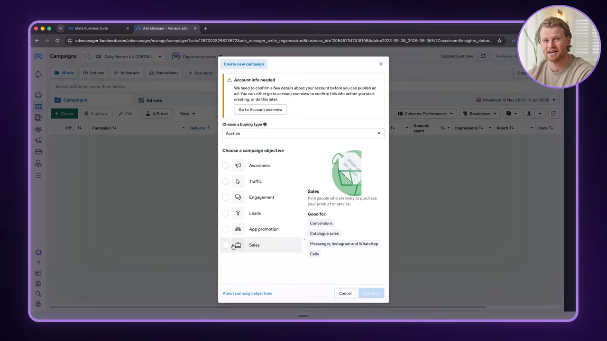
나머지 캠페인 설정
- 특별 광고 카테고리: 신용, 고용, 주택, 정치, 사회 문제 광고라면 제대로 선택해야 해요. 대부분은 해당하지 않으니 잘못 체크돼 있지 않은지만 봐요.
- 캠페인 이름: '캠페인 1'이나 'test' 말고 '판매 · 상품명 · 국가 · 날짜'처럼 써요. 캠페인이 50개쯤 쌓이면 차이가 커요.
- 수동 설정: Advantage+ 옵션이 보여도 처음엔 수동 구조로 만들어요. Advantage+가 나쁘다는 게 아니라, 구조를 먼저 이해하면 자동 옵션도 이해된다는 뜻이에요.
- A/B 테스트, 카탈로그: 둘 다 꺼 둬요. 첫 캠페인은 일반 소재로 돌리는 넓은 판매 캠페인이에요.
예산은 캠페인 단위로, 테스트라고 생각하고
예산은 Advantage 캠페인 예산을 켜고 캠페인 단위에 일일 예산으로 넣어요. 그러면 Meta가 광고 세트와 광고 사이에서 어디에 돈을 쓸지 알아서 나눠요.
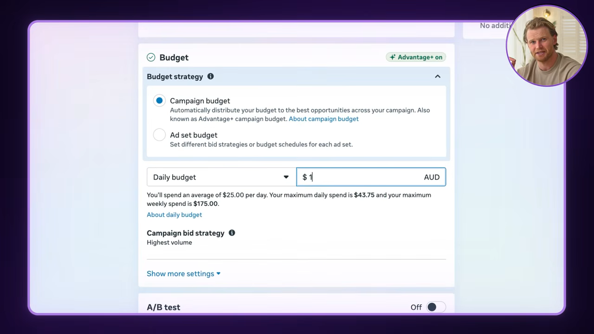
얼마로 시작할지는 상품 가격, 마진, 감당할 수 있는 금액에 달려 있어요. 100달러짜리 상품에 하루 3달러면 배울 게 거의 없어요. 반대로 검증 안 된 소재와 전환될지 모르는 페이지에 500달러를 넣으면 돈만 빠르게 태울 수 있어요. 첫 광고는 '테스트'로 보고, 하루 안 좋아도 사업이 흔들리지 않을 만큼만 써요.
잘 모르겠으면 하루 10달러로 시작하라고 해요. 100달러 상품으로 새 소재를 시험한다면 사업에 따라 하루 20~50달러 정도를 예로 들어요. 비싼 상품일수록 사람들이 쉽게 사지 않으니 CPA가 높아져요. 몇 달러까지 써도 되는지는 7번째 섹션의 계산기로 정해요.
광고 세트: 추적 연결과 넓은 타기팅
캠페인 다음은 광고 세트예요. 여기서는 어디서 전환이 일어나는지, 누구에게 어디에 보여 줄지를 정해요.
전환 위치와 이벤트
전환 위치는 '웹사이트'를 골라요. 리드 양식이나 인스타그램 메시지처럼 Meta 안에서 전환이 일어나는 경우가 아니면 바꿀 일이 거의 없어요. 사이트가 여러 개라면 맞는 걸 골랐는지만 봐요. 그다음 앞에서 확인한 픽셀(데이터 세트)을 고르고, 전환 이벤트는 '구매'로 해요.
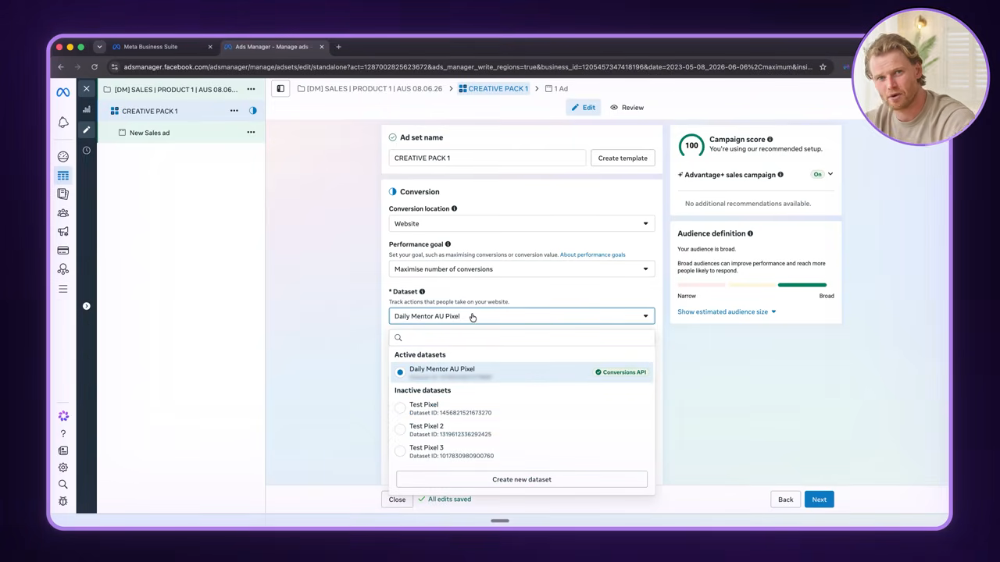
이벤트 활동이 부족하다는 경고가 뜨면 그냥 넘기지 말라고 해요. 다만 아직 판매가 없는 새 스토어라면 구매 이벤트가 없는 게 당연해요. Shopify로 연결했고 상품 조회나 페이지 조회가 들어오고 있다면, 첫 구매가 생기는 대로 경고가 사라져요.
타기팅은 넓게, 일은 소재가 해요
타기팅은 업계가 가장 많이 바뀐 부분이에요. 예전에는 관심사를 겹겹이 쌓고 유사 타겟을 만들었어요. 반려동물 상품이면 관심사에 '반려동물'을 넣는 식이죠. 지금은 초급·중급 계정 대부분에서 넓게 여는 쪽이 예상보다 잘 된다고 해요. Meta가 소재, 픽셀, 전환 데이터, 사용자 행동을 보고 알맞은 사람을 찾아 주기 때문이에요.
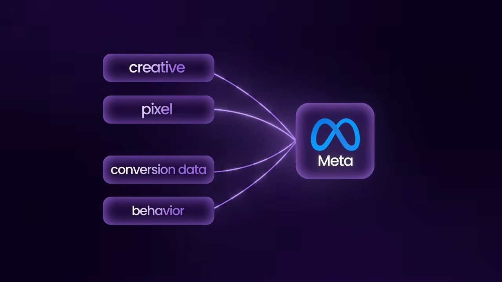
| 설정 | 영상의 권장 |
|---|---|
| 지역 | 실제로 팔고 배송할 수 있는 국가만 넣어요. 지역 서비스라면 실제 서비스 지역만 넣어요 |
| 나이, 성별 | 분명한 이유가 없으면 그대로 둬요. 선물로 사는 사람도 많고, Meta가 금방 알아내요 |
| 관심사 | 넣지 않아요. 넷플릭스 시청자를 노린다면 관심사 대신 소재에서 넷플릭스를 언급해요 |
| 제외 타겟 | 나중에 익숙해지면 기존 구매자 목록을 신규 고객 캠페인에서 빼요 |
| 노출 위치 | Advantage+ 노출 위치(자동)로 시작해요. 단, 소재가 여러 위치에 맞아야 해요 |
노출 위치를 자동으로 두면 한 가지 비율로만 만든 영상이 어색한 자리에 나갈 수 있어요. Meta가 곧 알아채고 그 자리에는 덜 보여 주지만 가끔은 튀어나와요. 데이비는 이걸 소재의 '안전 영역'으로 해결한다고 하고, 광고 단계에서 자세히 설명해요.
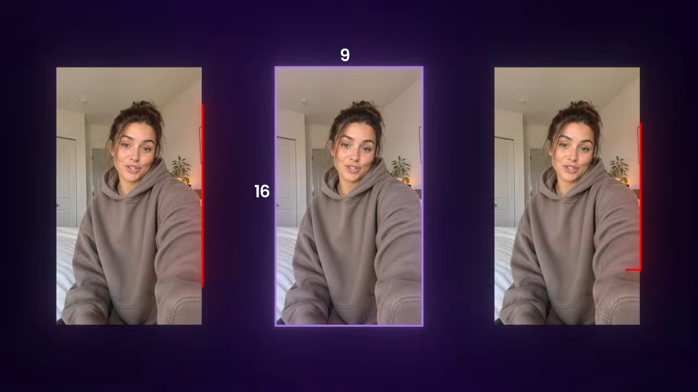
광고: 결국 소재가 전부예요
데이비는 광고 단계가 초보자가 가장 가볍게 넘기지만 가장 중요한 부분이라고 해요. 캠페인, 픽셀, 예산이 완벽해도 광고가 지루하거나, 헷갈리거나, 느리거나, 피드의 다른 광고와 똑같아 보이면 아무 일도 일어나지 않아요.
아이덴티티와 소재 업로드
먼저 '아이덴티티'에서 앞서 만든 페이스북 페이지와 인스타그램 계정을 골라요. 엉뚱한 페이지가 보이면 멈추고 비즈니스 설정으로 돌아가요. 그다음 이미지나 동영상을 직접 올려요. 새 계정이라 기존 게시물이 없으니 '수동 업로드'를 고르면 돼요.
서로 다른 각도의 소재 3~5개
소재에도 할 일이 있어요. 알맞은 사람에게, 알맞은 제품을, 와닿는 혜택과 함께 보여 주고, 다음 행동으로 이끌어야 해요. 그래서 처음부터 서로 다른 각도의 소재를 최소 3~5개 준비하라고 해요. 헤드라인만 바꾸거나 필터만 씌운 같은 광고는 다른 소재가 아니에요.
- 문제-해결형 광고
- 창업자가 직접 설명하는 광고
- UGC 후기 광고
- 제품을 직접 보여 주는 시연 광고
동영상 3개, 이미지 3개처럼 형식도 섞어요. 초기에는 소재가 많아서 나쁠 게 없고, 처음부터 10~30개로 시작하는 브랜드도 봤다고 해요. 무엇을 찍을지 막막하면 무료 도구인 Meta 광고 라이브러리에서 좋아하는 브랜드를 찾아 노출이 많은 광고 순으로 보며 아이디어를 얻어요. 셀카 카메라로 제품 이야기를 찍고, Canva로 이미지 광고 몇 개를 만드는 것만으로도 시작할 수 있어요.
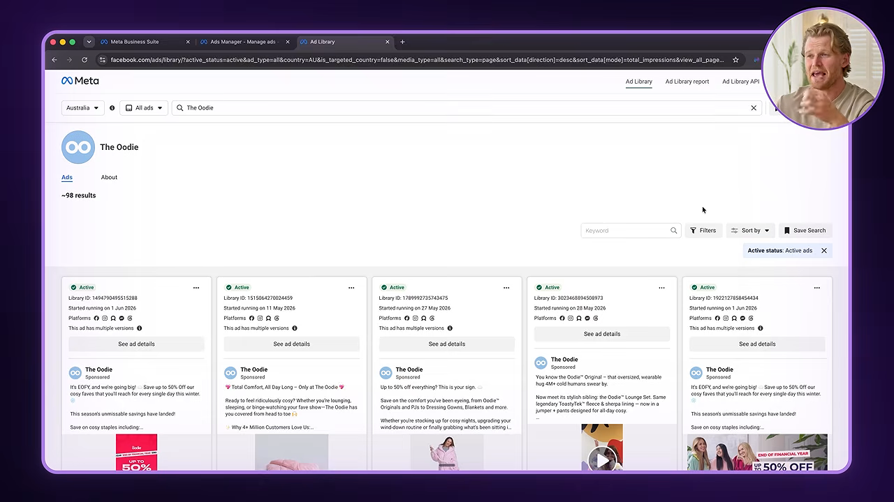
9:16으로 찍고, 핵심은 4:5 안에
소재를 올리면 오른쪽에서 노출 위치별 미리보기를 넘겨 볼 수 있어요. 데이비는 이 단계를 절대 건너뛰지 말라고 해요.
그의 팁은 이미지 광고까지 전부 세로 9:16으로 만드는 거예요. 대신 문구, 행동 유도 같은 중요한 요소는 인스타그램 피드에서 보이는 4:5 영역 안에 몰아 넣어요. 이 영역을 안전 영역이라고 불러요. 이렇게 하면 스토리에서는 화면을 꽉 채우고, 피드에서는 글자가 반쯤 잘리는 일이 없어요. 몇몇 노출 위치에서는 어색할 수 있지만, 성장에 중요한 자리가 아니라 괜찮다고 해요.
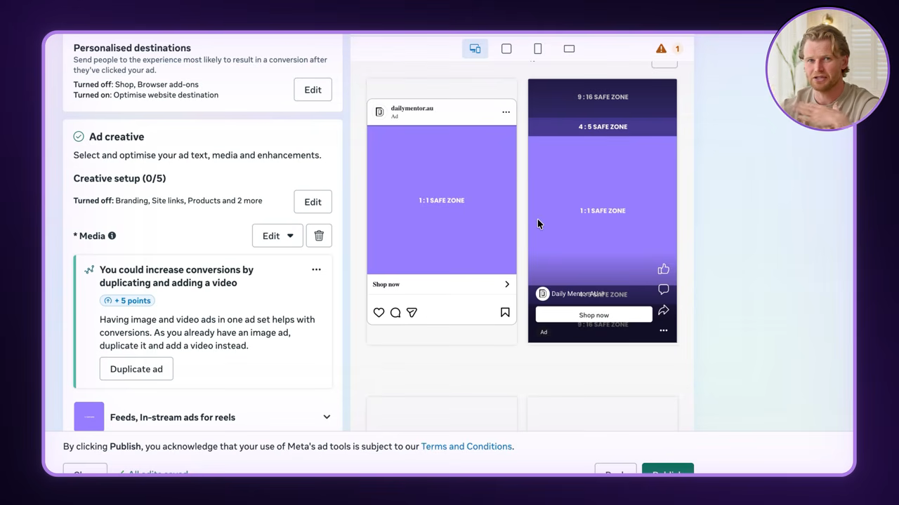
이미 4:5로만 만든 소재가 있다면 편집 프로그램에서 위아래를 흐리게 늘리거나 단색 배경을 깔아 9:16으로 맞춰요. 스토리는 꼭 돌리고 싶은 좋은 자리이기 때문이에요.
자동 개선은 끄고, 문구는 소재에 맞게
Meta가 보여 주는 소재 자동 개선, Advantage+ 크리에이티브 옵션은 처음엔 전부 꺼요. 특정 후킹이나 혜택 문구를 넣어 만든 광고를 Meta가 마음대로 자르고 오버레이를 붙이면, 소재가 통했는지 알 수 없게 되거든요.
기본 문구는 소설처럼 길 필요가 없어요. 소재와 맞고 혜택이 분명하면 돼요. 구조는 간단해요.
- 문제나 바람을 짚어요.
- 제품과 혜택을 설명해요.
- 지금 사야 할 이유를 줘요. 예를 들면 '두 개 사면 10% 할인'이에요.
막히면 ChatGPT나 Claude 같은 AI에 제품과 광고 모습을 설명하고 기본 문구 다섯 가지를 받아 하나를 골라요. Meta가 추천하는 문구 여러 개를 한꺼번에 쓰기보다 마음에 드는 하나만 써요. 개인의 민감한 특성을 아는 것처럼 짚는 표현과 사실이 아닌 주장은 쓰면 안 돼요.
헤드라인, URL, 복제
헤드라인은 꽤 중요하고, 설명은 덜 중요해요. 행동 유도 버튼을 고르고 웹사이트 URL을 넣었으면 직접 눌러 봐요. 모바일에서 잘 열리는지, 페이지의 혜택이 광고와 같은지 확인해요. 엉뚱한 사이트로 돈을 보내는 사람을 실제로 봤다고 해요. URL 아래 매개변수 칸은 UTM을 쓰는 사람용이라 초보자는 신경 쓰지 않아도 돼요.
첫 광고를 만들면 '복제'로 같은 광고 세트 안에 다음 광고를 만들어요. 이때 소재를 꼭 바꿔야 해요. 같은 광고를 두 번 올리면 테스트가 되지 않아요. 문구는 그대로 둬도 되고, 소재가 많이 다르면 바꿔도 돼요. 문구보다 소재가 훨씬 중요해요.
게시 전후의 안전장치
3~5개를 다 올렸으면 설정을 한 번 더 훑고 게시해요. 그러면 Meta가 광고 검토를 시작해요. 데이비는 검토 중에는 캠페인을 꺼 두라고 해요. 한밤중에 지켜보지 못하는 사이 돈이 나가지 않게 하고, 검토가 끝나면 낮에 켜서 지켜보는 거예요. 예산에 0을 하나 더 붙여 하루 5,000달러를 쓰지 않게 다시 확인해요.
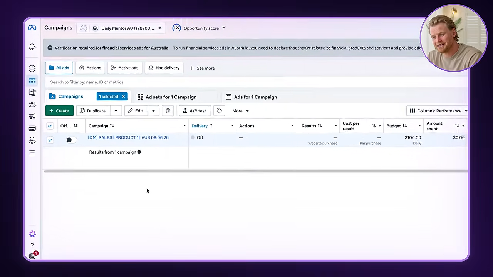
광고가 거절되면 당황하지 말고, 같은 걸 계속 다시 내지도 말아요. 거절 이유를 읽고 실제 문제를 고쳐요. 정말 잘못된 판정이라면 정식 재검토를 요청해요. 거절 화면을 캡처해 AI에 광고와 함께 보여 주고 고칠 방법을 물어도 돼요. 이상한 철자로 정책을 피하거나 새 광고 계정을 만드는 건 훨씬 큰 문제를 만든다고 경고해요.
처음 72시간에 볼 것
캠페인이 돈을 쓰기 시작하면 계정이 알려 주는 걸 읽을 줄 알아야 해요. 데이비는 처음 24~72시간의 목표가 '당황하지 않기'라고 해요.
먼저 세 가지만 확인
광고가 승인됐는지, 실제로 돈이 나가고 노출이 생기는지, 클릭한 사람이 맞는 페이지로 가고 이벤트가 기록되는지를 봐요. 줄이면 이 세 질문이에요.
- 광고가 돌아가도 되는 상태인가요?
- 실제로 돈이 나가고 있나요?
- 데이터가 제대로 돌아오고 있나요?
지출이 0이라면 보통 소재 문제가 아니에요. 결제, 타겟 크기, 계정 제한 같은 게재 문제일 가능성이 커요.
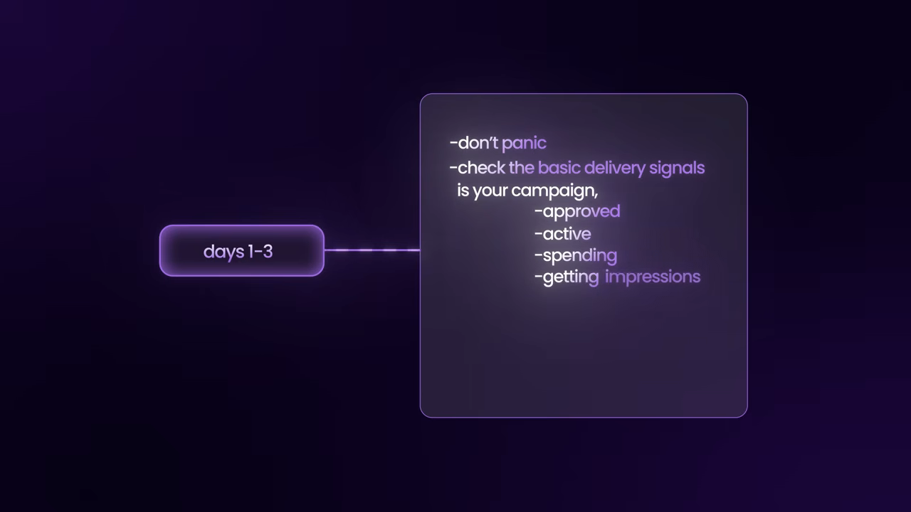
열(Column)을 퍼널 순서로 맞추기
기본 열로는 부족하니 '열 맞춤 설정'에서 퍼널 전체가 보이게 바꿔요. 영상에서 넣는 열은 이래요.
게재 상태, 지출 금액, 노출, 도달, CPM, 외부 클릭, 외부 CTR, 외부 클릭당 비용, 랜딩 페이지 조회, 장바구니 담기, 구매, 구매당 비용, 구매 전환값, ROAS.
여유가 있으면 전환율과 평균 주문 금액을 맞춤 지표로 만들어요. 이걸 '내 열' 같은 이름의 프리셋으로 저장해 두면, 지출 금액 순으로 정렬해 돈을 많이 쓰는 소재와 그 성과를 한눈에 볼 수 있어요.
72시간 뒤, 퍼널을 위에서부터 읽기
| 보이는 현상 | 의심할 곳 |
|---|---|
| 노출은 있는데 클릭이 없음 | 소재, 혜택, 접근 각도 |
| 클릭은 있는데 랜딩 페이지 조회가 없음 | 페이지 속도, 클릭 품질, 추적 |
| 페이지 조회는 있는데 장바구니가 없음 | 혜택, 가격, 사이트 신뢰도, 제품 자체 |
| 구매가 들어옴 | 수익이 나는지, 키울 수 있는 상품인지 |
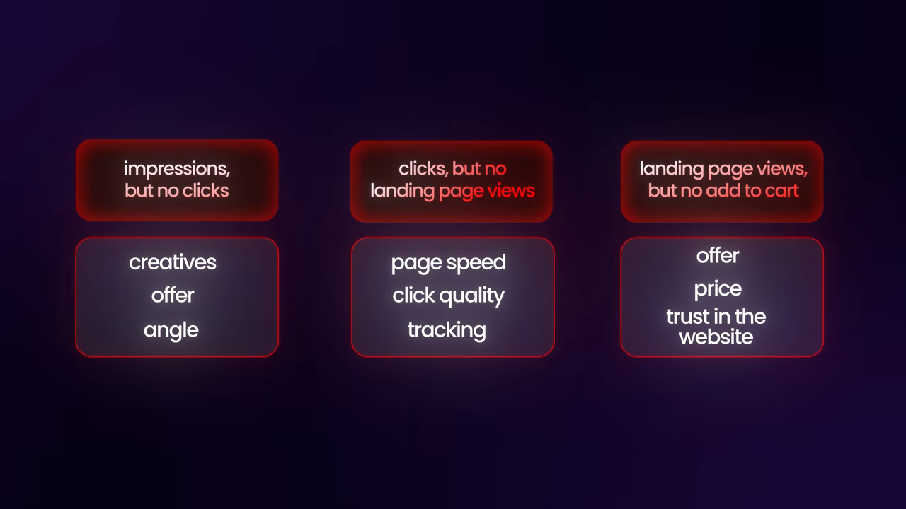
ROAS만 보고 당황하지 말고, 게재부터 퍼널을 한 칸씩 내려가면 다음에 무엇을 고칠지 정확히 보여요.
너무 일찍 고치지 않기
가장 흔한 함정은 너무 일찍 손대는 거예요. 10달러 쓰고 판매가 없으면 타겟을 바꾸고, 또 10달러 쓰고 소재를 바꾸고, 예산과 목표까지 바꿔요. 이렇게 하면 무엇이 효과였는지 알 수 없어요. 이 시기에 해도 되는 변화는 소재를 몇 개 더 넣는 정도예요. 앞에서처럼 광고를 복제해 새 소재를 올리면 돼요. 학습이 일부 초기화될 수 있지만, 초보자에게는 소재가 많을수록 낫다고 해요.
ROAS로 예산 조절하기
구매가 들어오기 시작하면 매일 예산을 관리할 때 가장 많이 보는 숫자가 ROAS예요. 1달러를 써서 몇 달러가 돌아왔는지를 뜻해요.
목표 ROAS는 계산기로 정해요
내 사업에서 ROAS가 얼마여야 하는지 모르겠다면, 데이비는 구글 시트의 Gemini에 이렇게 요청하라고 해요. 판매가, 평균 주문 금액, 개당 원가, 입고 운송비, 포장비, 피킹·포장비, 택배비, 결제 수수료, 할인, 그 밖의 변동비를 넣으면 광고 전 매출총이익과 손익분기 CPA, 손익분기 ROAS를 계산해 주는 이커머스 수익 계산기를 만들어 달라는 거예요. 순이익 20%를 남기려면 ROAS가 얼마여야 하는지도 함께 계산하게 할 수 있어요.
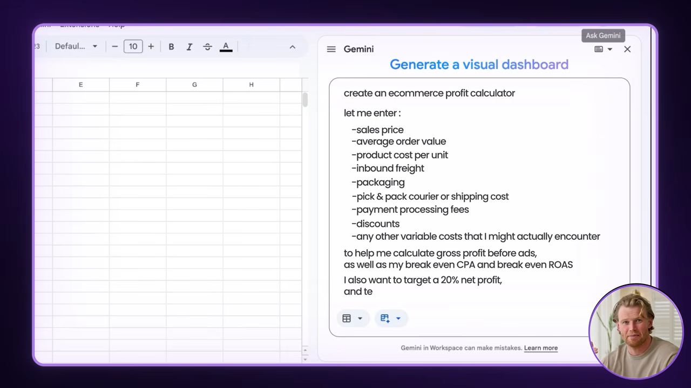
아침마다 ROAS 열 하나만 봐요
데이비가 말하는 운영은 단순해요. 아침에 ROAS 열을 보고 목표와 비교해요.
| 상황 | 할 일 |
|---|---|
| ROAS가 목표보다 낮음 | 지출을 줄여요. 적게 쓸수록 Meta가 효율적으로 쓰는 경향이 있어요 |
| ROAS가 목표를 크게 넘음 (목표 3, 실제 10) | 지출을 늘려 판매량을 키워요 |
| 목표 CPA 50달러인데 150달러 쓰고 구매 0건 | 문제가 있는 광고예요 |
| 15달러 쓰고 구매 0건 | 판단하기 일러요. 데이터가 더 필요해요 |
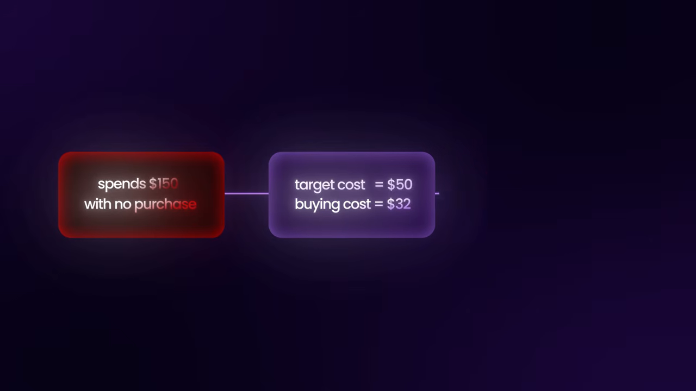
안 되는 광고를 일일이 끄지 않는 이유
성과 없는 광고를 끄고 싶어지지만 그대로 둬도 된다고 해요. 이 넓은 구조에서는 Meta가 알아서 안 되는 광고에 돈을 덜 쓰고, 잘 되는 소재에 예산을 몰아 줘요. 한 소재가 지출의 80%를 가져가는 일이 흔해요. 그래서 데이비는 운영자의 일이 이 구조에 새 소재를 계속 넣는 것이라고 정리해요. 이 구조가 단순해서 대행사가 꼭 필요하지 않다고도 말해요.
새 계정은 3일 단위로 판단
새 계정은 일요일엔 잘 팔리고 다른 날엔 0건일 수 있어요. 그래서 오른쪽 위 기간 필터를 '최근 3일'로 놓고 판단해요. 3일 ROAS가 수익권이면 예산을 10~20%만 올리고, 안정될 때까지 기다린 뒤 여전히 수익이 나는지 봐요. 판매가 아예 없으면 웹사이트, 혜택, 소재가 충분히 끌리는지 다시 봐야 해요. 데이비는 이게 이커머스 운영의 90%라고 말해요.
AI 도구는 분석, 실행, 제작으로 나눠요
계정이 바르게 세팅된 뒤에야 AI가 쓸모 있다고 해요. 영상 첫머리에서도 계정이 잘못 세팅돼 있으면 AI는 나쁜 결정을 더 빨리 내리게 도울 뿐이라고 했어요.
데이비는 AI가 페이스북 광고에서 하는 일을 세 가지로 나눠요. 분석을 돕고, 직접 실행하고, 소재를 만드는 거예요.
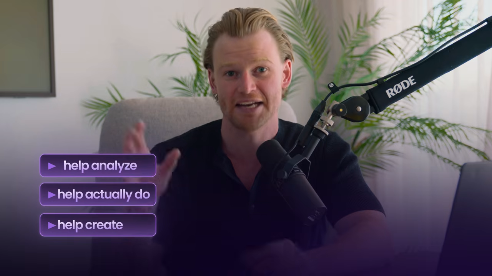
| 도구 | 영상에서 쓰는 방법 | 데이비의 평가 |
|---|---|---|
| ChatGPT | 헷갈리는 설정 화면을 캡처해 붙이고 '전문 페이스북 마케터'로서 답해 달라고 물어요 | 첫걸음으로는 좋지만 쓸모는 제한적이에요. 설정에서 막혔을 때만 써요 |
| Triple Whale | Shopify 앱으로 설치해 스토어를 연결하고, Moby 챗봇에 어떤 소재가 어떤 상품을 가장 많이 팔았는지 묻거나 잘 되는 광고 기반의 새 아이디어를 받아요 | 캡처 없이 내 사업과 광고 계정 맥락을 알고 답해요 |
| Manus | 광고 계정에 연결해 분석하고, 랜딩 페이지를 만들어 배포까지 해요 | 설정이 조금 더 필요하지만 Meta 연동이 강하고 할 수 있는 게 많아요 |
| Higgsfield | 프롬프트로 이미지를 만들고, 일부를 내 제품으로 바꾸거나 영상으로 만들어 광고로 써요 | 소재를 만드는 쪽 도구로 꼭 시험해 보라고 해요 |
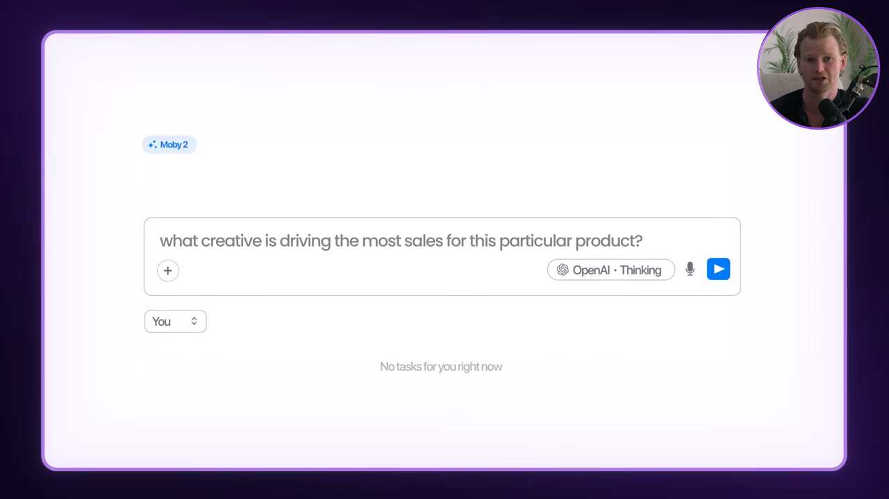
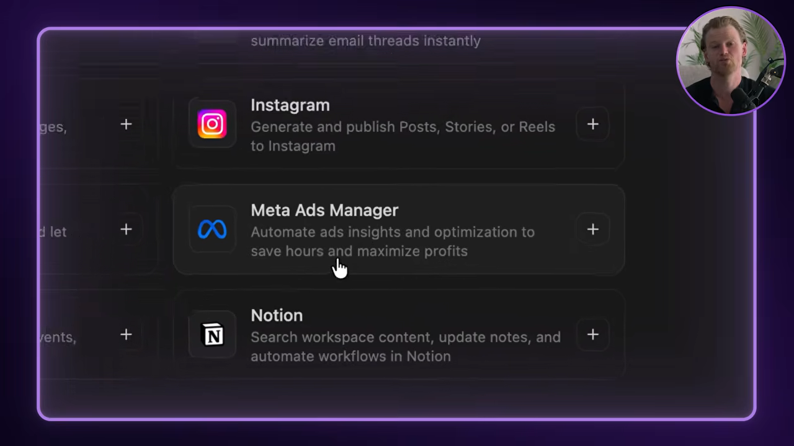